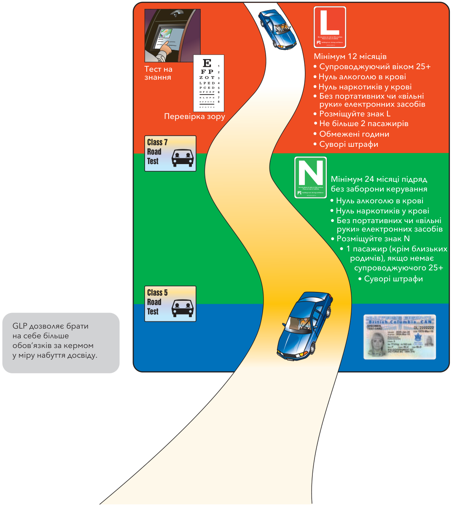
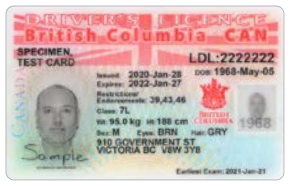
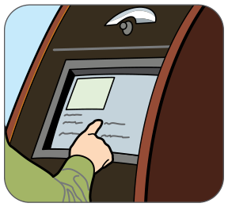
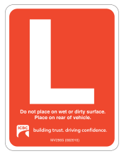
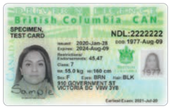
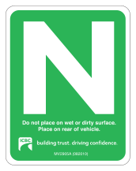
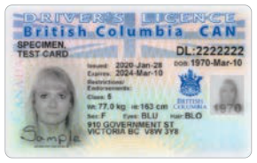
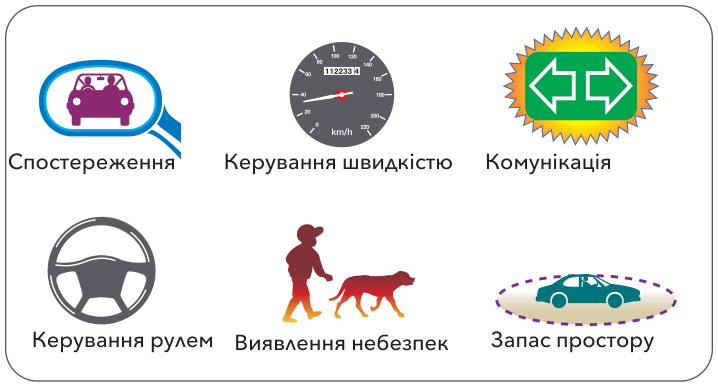

ваше посвідчення водія
У цьому розділі описано, як отримати посвідчення водія B.C. Тут також описано штрафні санкції, якщо ви порушуєте правила та норми водіння. Прочитайте цей розділ, щоб дізнатися про обов’язки, пов’язані з отриманням і збереженням посвідчення водія.
Як навчитися водити
Щоб навчитися водити, вам потрібен хтось, хто навчатиме вас і супроводжуватиме вашу практику водіння.
Саме тому одне з обмежень учнівського посвідчення водія, як ви побачите далі в цьому розділі, — вимога мати у транспортному засобі разом із вами кваліфікованого супроводжуючого.
Вибір супроводжуючого
Вам потрібно вибрати супроводжуючого, який серйозно поставиться до того, щоб допомогти вам стати вправним, безпечним водієм.
Ось що варто врахувати, вибираючи супроводжуючого:
- Чи готова ця людина виділити час, потрібний для практики?
- Чи є ця людина вправним, досвідченим водієм? Ваш супроводжуючий повинен мати дійсне посвідчення Class 5 і відповідати вимогам до віку, наведеним далі в цьому розділі.
- Чи буде ця людина добрим прикладом безпечного водіння? Чи можна бути певним, що вона не керуватиме з порушенням здатності керувати через алкоголь чи наркотики, не перевищуватиме швидкість і не ризикуватиме на дорозі?
- Чи вміє ця людина чітко передавати інформацію та думки?
- Чи має вона терпіння, щоб ефективно вас направляти?
Професійне навчання
Професійне навчання може допомогти вам вчитися швидше й не набути поганих звичок водіння.
Далі в цьому розділі ви знайдете інформацію, яка допоможе вам вибрати автошколу.
Програма поетапного отримання посвідчення
Програма поетапного отримання посвідчення (GLP) у B.C. покликана зменшити кількість аварій серед нових водіїв будь-якого віку. За GLP нові водії набувають досвіду поступово, в умовах меншого ризику. Щоб отримати посвідчення Class 5 з повними правами, ви пройдете кілька етапів.

Отримання учнівського посвідчення водія (Class 7L)
Перше посвідчення, яке отримують нові водії, — це учнівське посвідчення водія. Щоб подати заяву на учнівське посвідчення водія, вам має бути не менше 16 років. Вам також потрібно скласти тест на знання та пройти перевірку зору й медичний огляд. Це посвідчення дійсне два роки. Щоб поновити його, вам потрібно буде скласти тест на знання повторно.

Щоб подати заяву, зайдіть до найближчого офісу видачі посвідчень водія. Якщо ви вже склали тест онлайн або складете тест в офісі видачі посвідчень, вам видадуть посвідчення Class 7L, знак L (Learner) і примірник Tuning up for drivers.
В офісі видачі посвідчень водія
Коли ви прийдете до офісу видачі посвідчень водія, щоб отримати учнівське посвідчення водія, візьміть із собою:
- основне й додаткове посвідчення особи — див. підрозділ Посвідчення особи (ID) на внутрішній стороні задньої обкладинки.
- одного з батьків-опікунів або законного опікуна, якщо вам менше 19 років. (Ви можете подати заяву про звільнення від цієї вимоги, якщо не живете з батьками або законним опікуном.)
- збори за тест на знання та посвідчення Class 7L
- окуляри або контактні лінзи, якщо вони потрібні вам для водіння.
Тест на знання
Тест на знання містить 50 питань з вибором відповіді, які показують, наскільки добре ви знаєте інформацію з цього посібника. Тест можна скласти онлайн або в будь-якому з наших офісів видачі посвідчень водія. Це не тест з відкритою книгою, і під час складання не дозволено користуватися телефонами та електронними пристроями. У деяких частинах провінції він доступний лише як письмовий тест. Тест доступний англійською, французькою, арабською, кантонською, хорватською, фарсі, мандаринською, панджабі, російською, іспанською та в’єтнамською мовами.

Якщо ви плануєте складати тест в офісі видачі посвідчень, приїдьте до офісу щонайменше за годину до закриття. Якщо у вас є інвалідність, через яку вам буде важко складати тест, зателефонуйте до офісу видачі посвідчень заздалегідь, щоб повідомити про це.
Пройдіть тренувальний тест онлайн
Щоб підготуватися до тесту на знання, ви можете пройти тренувальний тест або завантажити наш безкоштовний застосунок на icbc.com. Посібник Вчіться водити розумно також можна завантажити як частину застосунку.
Перевірка зору та медичний огляд
Ваш зір перевірять, щоб переконатися, що ви бачите достатньо для безпечного водіння. Вас перевірять на колірний зір, сприйняття глибини, поле зору, диплопію (двоїння в очах) і гостроту зору. Якщо ви не пройдете перевірку зору, вам може знадобитися додаткове обстеження зору в оптометриста або офтальмолога. Якщо для водіння вам потрібні окуляри або контактні лінзи, це обмеження буде зазначено у вашому посвідченні водія.
Вас також запитають про стан вашого здоров’я. Якщо виникнуть будь-які питання щодо вашої фізичної здатності керувати або якщо у вас прогресуюче захворювання, вам може знадобитися звернутися до лікаря для медичного огляду. Звіт вашого лікаря надішлють до RoadSafetyBC. Остаточне рішення про видачу вам посвідчення водія ухвалять там.
Обмеження водіння на учнівському етапі
Поки ви керуєте з учнівським посвідченням водія, ви повинні дотримуватися цих обмежень:
- Кваліфікований супроводжуючий — кваліфікований супроводжуючий повинен сидіти поруч із вами, коли ви керуєте. Ваш супроводжуючий має бути віком 25 років або старше та мати дійсне посвідчення Class 1, 2, 3, 4 або 5.

- Нуль алкоголю в крові — ви не повинні керувати після споживання будь-якої кількості алкоголю.
- Нуль наркотиків у крові — ви не повинні керувати механічним транспортним засобом, маючи в організмі певні наркотичні речовини, зокрема канабіс (THC).
- Жодних портативних чи «вільні руки» електронних засобів — ви не повинні користуватися портативними чи «вільні руки» засобами зв’язку (наприклад, телефонами, музичними або портативними ігровими пристроями, системами GPS) під час керування.
- Знак L — ви повинні розміщувати офіційний знак L (Learner) на задньому склі або на задній частині транспортного засобу, коли ви керуєте. Він має бути видним водіям позаду вас. Ми видамо вам цей знак, коли ви отримаєте учнівське посвідчення водія.
- Обмеження щодо пасажирів — у транспортному засобі з вами можуть бути лише два пасажири: ваш супроводжуючий і один додатковий пасажир.
- Обмежені години водіння — ви можете керувати лише з 5:00 до півночі.
Отримання посвідчення новачка (Class 7)
Щоб отримати посвідчення новачка, ви повинні скласти дорожній тест Class 7. Цей тест оцінює, чи ви компетентні керувати самостійно. На час складання дорожнього тесту Class 7 ви вже матимете учнівське посвідчення водія щонайменше рік. Ви проведете багато годин практики зі супроводжуючим. Коли ви отримаєте учнівське посвідчення водія, вам видадуть журнал досвіду водіння — записуйте в ньому свої години практики. Вам слід набрати щонайменше 60 годин практики. Це допомагає розвинути навички та досвід, потрібні, щоб скласти дорожній тест, і закладає основу безпечного водіння протягом усього життя.

Дорожній тест Class 7
Дорожній тест Class 7 проводить екзаменатор, який оцінює вашу здатність керувати безпечно, плавно та контрольовано. Дорожній тест триває приблизно 35 хвилин. Ви повинні надати безпечний транспортний засіб для свого дорожнього тесту. Під час дорожнього тесту в транспортному засобі не можуть бути тварини чи пасажири, крім екзаменатора та інших уповноважених осіб. Підготуватися до тесту можна, переглянувши цей посібник і скориставшись посібником Tuning up for drivers для практики.
Ось те, чого можна очікувати під час дорожнього тесту.
Перед початком — екзаменатор перевіряє, чи ви знаєте, де розташовані органи керування, чи користуєтеся паском безпеки та чи налаштовуєте сидіння, дзеркала й підголівники для максимальної безпеки, див. розділ 2, Перевірка перед поїздкою.
Використання навичок — дорожній тест Class 7 оцінює вашу здатність застосовувати навички дивись – думай – дій: спостереження, виявлення небезпек, керування швидкістю, запас простору, керування рулем і комунікацію. Докладніше про ці навички див. розділ 5, дивись – думай – дій.
Виконання маневрів — ваш дорожній тест Class 7 може включати:
- маневри на перехресті (проїзд через нього, поворот праворуч, поворот ліворуч)
- задній хід
- в’їзд у потік
- притискання до краю дороги та зупинка
- зміна смуги
- паркування на схилі
- початок руху на схилі
- паркування під кутом
- паралельне паркування
- паркування в машиномісці (рух уперед і задній хід)
- розворот у два та три приймання
- вливання в потік шосе та виїзд із нього
- загальне водіння (наприклад, рух прямо, водіння на схилах і закрутах).
Отримання відгуку — у кінці тесту екзаменатор обговорить з вами ваші результати. Обов’язково запитуйте, якщо чогось не розумієте. Незалежно від того, склали ви тест чи ні, ви можете дізнатися, як покращити своє водіння. Якщо ви не склали, можете скласти тест повторно через 14 днів.
Обмеження водіння на етапі новачка
Поки ви керуєте з посвідченням новачка, ви можете керувати без супроводу з такими обмеженнями:
- Нуль алкоголю в крові — ви не повинні керувати після споживання будь-якої кількості алкоголю.
- Нуль наркотиків у крові — ви не повинні керувати механічним транспортним засобом, маючи в організмі певні наркотичні речовини, зокрема канабіс (THC).

- Жодних портативних чи «вільні руки» електронних засобів — ви не повинні користуватися портативними чи «вільні руки» засобами зв’язку (наприклад, телефонами, музичними або портативними ігровими пристроями, системами GPS) під час керування.
- Знак N — ви повинні розміщувати офіційний знак N (Novice) на задньому склі або на задній частині транспортного засобу, коли ви керуєте. Він має бути видним водіям позаду вас. Ви отримаєте цей знак, коли отримаєте посвідчення Class 7.
- Обмеження щодо пасажирів — у транспортному засобі з вами може бути лише один пасажир, окрім випадків, коли:
a) пасажири — ваші близькі родичі («близькі родичі» означає ваших батьків, дітей, подружжя, братів, сестер, дідів і бабусь, включно з відносинами через шлюб батьків та прийомними), або
b) поруч із вами сидить супроводжуючий віком 25 років або старше, який має дійсне посвідчення Class 1, 2, 3, 4 або 5, або
c) ви проходите навчання водіння під наглядом ліцензованого інструктора з навчання водіння.
Штрафні санкції Програми поетапного отримання посвідчення (GLP)
Коли ви новий водій, вашу історію водіння уважно контролює Superintendent of Motor Vehicles (керівник управління транспортних засобів). Якщо ви отримаєте штрафний талон за порушення правил дорожнього руху або вчините інше правопорушення під час керування, вам можуть надіслати попереджувальний лист, призначити випробний режим або заборону керування. Крім звичайних штрафних санкцій за водіння, для водіїв GLP є додаткові.
- Вам можуть призначити штраф і записати штрафні бали у вашу історію водіння, якщо ви порушите будь-яке з обмежень водіння на учнівському етапі або на етапі новачка.
- Вам також можуть призначити штраф і записати штрафні бали в історію водіння за перевищення швидкості чи інші порушення правил дорожнього руху.
- Більше балів або серйозніші правопорушення можуть призвести до заборони керування на строк від місяця до року й більше.
- Якщо ви порушите обмеження щодо алкоголю в крові або керуватимете транспортним засобом під впливом наркотиків, вам можуть одразу на місці призупинити дію посвідчення водія або заборонити керування. Це буде записано у вашу історію водіння, і через це вам може загрожувати ще одна заборона керування.
- Якщо ви отримаєте заборону керування на учнівському етапі, ваш учнівський етап буде продовжено, бо ви не накопичуватимете час до переходу на етап новачка, доки не відбудете заборону та не поновите посвідчення водія.
- Якщо ви отримаєте заборону керування на етапі новачка, ви втратите весь час, накопичений до виходу з GLP. Коли після заборони ваше посвідчення водія буде поновлено, вам доведеться накопичити ще 24 місяці підряд без заборон, щоб мати право вийти з GLP.
Отримання посвідчення Class 5
Після того як ви пробудете з посвідченням новачка щонайменше 24 місяці підряд без заборони керування, ви можете скласти дорожній тест Class 5. Складання цього тесту означає, що ви виходите з GLP і отримуєте посвідчення водія з повними правами.

Дорожній тест Class 5
Дорожній тест Class 5 вимагає вищого рівня навичок водіння, ніж дорожній тест Class 7. Він дає вам можливість показати, що ви тепер безпечний, досвідчений водій із відмінними навичками керування транспортним засобом. Дорожній тест триває приблизно годину. Ви повинні надати безпечний транспортний засіб для свого дорожнього тесту. Тварини чи пасажири,
крім екзаменатора та інших уповноважених осіб, не допускаються під час вашого дорожнього тесту.
Використання навичок — тест Class 5 включає ті самі навички, що й тест Class 7: спостереження, виявлення небезпек, керування швидкістю, запас простору, керування рулем і комунікація. У певні моменти тесту вас попросять назвати небезпеки, які ви бачите під час керування. Вам потрібно буде дивитися вперед і користуватися дзеркалами, щоб виявляти всі небезпеки збоку, позаду та спереду від вас.

Виконання маневрів — дорожній тест Class 5 може включати:
- маневри на перехресті (проїзд, поворот праворуч і ліворуч)
- зміни смуги
- в’їзд на шосе або автомагістраль і виїзд з них
- розвороти у три приймання
- притискання до краю дороги та зупинка
- паркування в машиномісці заднім ходом
- загальне водіння (наприклад, рух прямо, водіння на схилах і закрутах)
- паркування на схилі
- паралельне паркування.
Отримання відгуку — як і після дорожнього тесту Class 7, після завершення тесту Class 5 ви маєте можливість обговорити свої результати з екзаменатором. Слухайте та вчіться. Підвищення безпеки вашого водіння — це важливо. Якщо ви не складете тест з першого разу, ви можете скласти його знову через 14 днів. Якщо ви складаєте тест другий раз і не складете його, ви можете спробувати знову через 30 днів. Якщо після трьох або більше спроб ви не складете тест, ви можете скласти його знову через 60 днів.
Складання дорожнього тесту
Запис на дорожній тест
Запишіться на дорожній тест онлайн на icbc.com/roadtest*
Щодо всіх запитань про видачу посвідчень водія, зокрема запису на комерційні дорожні тести, телефонуйте:
- У Метро-Ванкувері: 604-982-2250
- Велика Вікторія: 250-978-8300
- Безкоштовно по всій B.C.: 1-800-950-1498
* Сторонні сайти запису, які беруть збір або збирають ваші дані, не пов’язані з ICBC. Запис на дорожній тест — безкоштовний.
Коли ви приходите на дорожній тест, візьміть із собою:
основне й додаткове посвідчення особи — див. підрозділ Посвідчення особи (ID) на внутрішній стороні задньої обкладинки.
безпечний транспортний засіб
дійсні реєстраційні, ліцензійні та страхові документи
ваше поточне посвідчення водія
збори за дорожній тест і посвідчення з фотографією
окуляри або контактні лінзи, якщо вони потрібні для водіння.
Вибір автошколи
Ви можете підготуватися до дорожнього тесту Class 7 або Class 5, беручи уроки в професійного інструктора з водіння. Є вагомі причини брати уроки водіння. Навчитися водити вміло й безпечно непросто. Кваліфіковані інструктори часто навчають нових водіїв результативніше, ніж члени родини або друзі.
Якщо ви готуєтеся до дорожнього тесту Class 5, професійний інструктор з водіння може допомогти вам освіжити навички.
Обираючи автошколу, ви можете поставити такі питання:
- Чи ліцензована ваша школа? Чи ліцензовані інструктори? Усі автошколи та інструктори повинні мати ліцензію ICBC. Попросіть показати ліцензії.
- Чи можу я побачити письмові правила щодо ваших тарифів (включно з усіма платежами), годин занять, кількості людей у навчальному транспортному засобі та повернення коштів? Школа зобов’язана надати вам це.
- Чи пропонує ваша школа курс навчання водіїв, схвалений ICBC?
- Чи можу я побачити план курсу?
- Чи використовуєте ви різні методи навчання (наприклад, індивідуально, у класних групах тощо)?
- Наскільки досвідчені ваші інструктори? Скільки навчання вони пройшли останнім часом?
- Як ви залучаєте батьків/опікунів або дорослих супроводжуючих до навчання нових водіїв?
- Як ви утримуєте навчальні автомобілі безпечними й справними?
- Чи маєте ви транспортний засіб з механічною коробкою передач, якщо я хочу навчитися ним керувати?
- Що мені потрібно знати перед початком вашого курсу (тобто тип одягу, обладнання, спорядження тощо)?
Нарешті, запитайте інших людей: чи чули ви добрі відгуки про цю школу?
Курси навчання водіїв, схвалені ICBC
Деякі автошколи пропонують схвалені ICBC курси для нових водіїв у Програмі поетапного отримання посвідчення (GLP) Британської Колумбії. Такі школи виставляють дійсну ліцензію автошколи (Driving School Licence) від ICBC з позначкою GLP. Схвалені школи також перелічені в розділі Driver Training на icbc.com/partners.
Схвалені ICBC курси GLP для водіїв Class 7 передбачають щонайменше 32 години навчання та включають заняття в класі й за кермом.
Якщо ви успішно завершите схвалений курс GLP на учнівському етапі GLP, ви маєте право на скорочення етапу новачка на шість місяців, за умови що протягом перших 18 місяців етапу новачка у вас немає порушень, заборон керування чи аварій з вашої вини.
Учні середньої школи, які успішно завершили схвалений курс GLP, можуть отримати два кредити 11 класу, подавши свою Declaration of Completion (декларацію про завершення) до адміністрації своєї середньої школи.
Нові мешканці B.C.
Ви можете користуватися дійсним посвідченням водія з іншої провінції, штату або країни протягом перших 90 днів проживання в B.C. Після цього для керування в B.C. вам потрібне посвідчення водія B.C. Вам потрібно буде здати старе посвідчення та скласти відповідні тести для водіїв.
Вам потрібно буде надати підтвердження, що ви маєте посвідчення водія в іншій юрисдикції. У більшості випадків достатньо вашого попереднього посвідчення водія. За класом посвідчення, який ви мали, разом з вашим досвідом водіння визначать, який клас посвідчення B.C. вам призначать і які тести вам, можливо, потрібно скласти.
Найкраще подати заяву на посвідчення водія B.C. задовго до кінця 90 днів після переїзду до Британської Колумбії. Нові мешканці, які мають посвідчення Канади, США, Австралії, Австрії, Нідерландів, Франції, Німеччини, Японії, Нової Зеландії, Південної Кореї, Швейцарії або Великої Британії, зазвичай можуть завершити обмін посвідчення того самого дня. Щоб дізнатися більше, зверніться до офісу видачі посвідчень водія.
Повторне складання тестів
Щороку в B.C. майже 3 000 людей отримують від RoadSafetyBC повідомлення про те, що їм потрібно прийти на повторне складання тестів. Найпоширеніші причини повторного складання тестів:
- медичний звіт про водія, у якому зазначено проблему зі здоров’ям
- звіт поліції, у якому зазначено, що водій не знав, як діяти у звичайній дорожній ситуації.
Якщо повторне складання охоплює лише перевірку зору та тест зі знаків і сигналів, запис не потрібен. Якщо воно включає також дорожній тест, вам потрібно зателефонувати до місцевого офісу видачі посвідчень водія протягом 30 днів після отримання повідомлення, щоб записатися на дорожній тест. Коли ви прийдете на тест, вам потрібно взяти основне й додаткове посвідчення особи (див. підрозділ Посвідчення особи (ID) на внутрішній стороні задньої обкладинки) та окуляри чи контактні лінзи, якщо вони потрібні вам для водіння. Також варто взяти з собою водія з посвідченням на випадок, якщо ви не складете тест.
Підготуйтеся до повторного складання тестів, переглянувши цей посібник. Розгляньте можливість пройти курс повторення в автошколі, щоб освіжити навички. Ви також можете отримати примірник Tuning up for drivers в офісі видачі посвідчень водія. Це допоможе вам практикувати водіння.
Оновлення даних посвідчення водія
| Ситуація | Що робити |
|---|---|
| Якщо ви змінили адресу. | Ви зобов’язані оновити адресу в посвідченні водія протягом 10 днів після переїзду. Змінити адресу в посвідченні водія можна трьома способами:
• У Метро-Ванкувері: 604-775-0011 • В інших місцях B.C.: 1-866-775-0011 • Щоб скористатися розширеними годинами роботи, телефонуйте до ICBC Customer Contact: у Вікторії: 250-978-8300 Коли телефонуєте, тримайте під рукою номер свого посвідчення водія B.C.
За зміну адреси збір не стягується. Примітка: Якщо у вас є EDL (посвідчення водія розширеного типу), вам потрібно буде записатися на особистий візит до офісу видачі посвідчень водія, щоб змінити адресу. За заміну EDL із новою адресою стягується збір. |
| Ваше посвідчення водія втрачено або пошкоджено. Ви змінили ім’я. Термін дії вашого посвідчення водія скоро закінчується. | Зверніться до офісу видачі посвідчень водія. Щоб отримати нове посвідчення водія, ви повинні погасити всі штрафи та борги перед урядом B.C. та перед ICBC. Вам потрібне належне посвідчення особи (див. підрозділ Посвідчення особи (ID) на внутрішній стороні задньої обкладинки), старе посвідчення водія (якщо воно не втрачене) та гроші для сплати збору за посвідчення водія. Якщо ви змінили ім’я, вам потрібне юридичне підтвердження зміни імені (наприклад, свідоцтво про шлюб або свідоцтво про зміну імені). Вас можуть сфотографувати заново. |
| Термін дії вашого посвідчення водія закінчився. | Якщо ви поновлюєте посвідчення протягом трьох років після закінчення терміну дії, ICBC може поновити його без повторного складання тестів. Ви повинні погасити всі штрафи та борги перед урядом B.C. та ICBC і взяти прострочене посвідчення. Потрібне належне посвідчення особи (див. підрозділ Посвідчення особи (ID) на внутрішній стороні задньої обкладинки) та гроші на збір. Якщо термін дії закінчився понад три роки тому, вам потрібно буде пройти перевірку зору, скласти тест зі знаків дорожнього руху та дорожній тест. |
Огляд класів посвідчень водія
Докладніше на icbc.com або зверніться до місцевого офісу видачі посвідчень водія.
| Клас | Типові транспортні засоби | Мінімальний вік |
|---|---|---|
| Class 1 |
| 19 |
| Class 2 |
| 19 |
| Class 3 |
| 18 |
| Class 4 (без обмежень) |
| 19 |
| Class 4 (з обмеженнями) |
| 19 |
| Class 5 або 7* |
| 16 |
| Class 6 або 8* |
| 16 |
| Class 4 або 5 з дозволом на важкий причіп (код 20) |
| 18 |
| Class 4 або 5 з дозволом на житловий причіп (код 07) |
| 18 |
* Водіям у Програмі поетапного отримання посвідчення (GLP) у B.C. видають посвідчення водія Class 7 та/або 8.
** Мотоцикли з обмеженою швидкістю — ними не можна керувати з учнівським посвідченням водія, крім учнівського посвідчення на мотоцикл Class 6 або 8. Це мотоцикли, мопеди та моторолери з:
- робочим об’ємом двигуна 50 см³ або менше (чи потужністю менше 1,5 кВт, якщо двигун не поршневий),
- коробкою передач, яка не потребує перемикання чи зчеплення,
- максимальною швидкістю 70 км/год,
- колесами діаметром не менше 254 мм (10 дюймів), і
- сухою масою 95 кг або менше.
Пневматичні гальма
Щоб керувати транспортними засобами з пневматичними гальмами на шосе (крім транспортного засобу, який визначено як будівельний), ви повинні мати посвідчення водія B.C. з дозволом на пневматичні гальма (код 15).
Обмеження, умови та дозволи
Залежно від вашої придатності та здатності, ваше посвідчення водія може містити певні обмеження, умови або дозволи. Наприклад, від вас можуть вимагати носити коригувальні лінзи (окуляри або контактні лінзи) під час керування.
Туристичні причепи
Інформацію про буксирування туристичних причепів та отримання дозволу на житловий причіп дивіться в Towing a recreational trailer на icbc.com.
Обов’язки та штрафи
Як власник посвідчення водія ви маєте юридичні обов’язки. Наявність посвідчення водія B.C. — це привілей, а не право. Ви повинні застрахувати свій транспортний засіб і безпечно керувати, щоб захистити себе та інших учасників дорожнього руху.
Посвідчення водія
Слід:
- завжди мати посвідчення водія при собі під час керування
- тримати дані посвідчення водія актуальними. Повідомте ICBC, якщо ви змінили ім’я або адресу.
Не слід:
- позичати своє посвідчення водія комусь іншому
- будь-коли користуватися недійсним посвідченням водія
- якимось чином змінювати своє посвідчення водія.
Викрадення даних особи та шахрайство з посвідченнями водія
Викрадення даних особи — один із злочинів, що найшвидше зростають у Північній Америці. Викрадення даних особи відбувається, коли хтось використовує вашу особисту інформацію без вашого відома чи згоди, щоб скоїти злочин, наприклад шахрайство чи крадіжку. Потерпілі від викрадення даних особи мають фінансові втрати, поганий кредитний рейтинг і зіпсовану репутацію.
Посвідчення водія стало загальноприйнятою й надійною формою посвідчення особи. Якщо ваше посвідчення водія викрадено, отримано шахрайським шляхом, відскановано або підроблено, його можуть використати як інструмент для скоєння злочину.
Ви не можете повністю контролювати, чи станете жертвою викрадення даних особи, але можете зробити кроки, щоб зменшити ризик.
Захист від шахрайства
Існує суворе покарання, яке допомагає захистити вас від людей, що вчиняють шахрайство з посвідченнями водія та картками посвідчення особи. Тим, хто вчиняє ці правопорушення, тепер загрожують штрафи від 400 до 20 000 доларів, до шести місяців позбавлення волі або і те, і те. Правопорушення, які охоплює закон, включають:
- Надання неправдивих або таких, що вводять в оману, заяв, ненадання обов’язкової інформації, подання підроблених документів чи шахрайське використання документів для отримання або спроби отримання посвідчення водія чи картки посвідчення особи.
- Допомога комусь у шахрайському отриманні або спробі отримання посвідчення водія чи картки посвідчення особи описаними вище способами.
- Використання посвідчення водія чи картки посвідчення особи, що належить іншій особі, або володіння ними.
- Дозвіл іншій особі використовувати ваше посвідчення водія чи картку посвідчення особи або володіти ними.
- Використання фіктивного чи недійсного посвідчення водія або картки посвідчення особи чи володіння ними.
- Зміна посвідчення водія чи картки посвідчення особи.
Страхування транспортного засобу
Як водій ви повинні переконатися, що транспортний засіб, яким ви керуєте, має чинний номерний знак і достатнє страхування.
Базове покриття ICBC Basic Autoplan забезпечує, що кожен водій у B.C. має мінімальний обсяг страхування відповідальності, а також страхування, яке допомагає, якщо він потрапив в аварію транспортних засобів із травмами або загибеллю. Ця система захищає мешканців Британської Колумбії, бо практично всі водії в B.C. мають щонайменше мінімальний обсяг страхування.
Якщо ви будете керувати транспортним засобом своїх батьків, їм може знадобитися скорегувати своє страхування Autoplan. Найкраще, щоб ваші батьки обговорили свої варіанти з брокером Autoplan від ICBC.
Несплачені штрафи та борги
Будь-які несплачені штрафи або борги, які ви маєте перед судами B.C., урядом провінції або ICBC, потрібно погасити, перш ніж ви зможете отримати або поновити посвідчення водія. До них належать несплачені штрафи за алкоголь, дорожні збори та заборгованість перед Програмою примусового стягнення сімейного утримання Британської Колумбії.
Штрафні санкції за небезпечне водіння
Якщо ви вирішите керувати небезпечно, вам можуть призначити штраф і заборонити керування. Заборона означає, що вам незаконно керувати транспортним засобом упродовж певного часу. І якщо вас зловлять за кермом під час заборони, ваш транспортний засіб можуть вилучити, а вам можуть загрожувати штрафи або строк ув’язнення. За поновлення посвідчення водія після заборони стягується збір $250.
У розділі 1, ви за кермом, вас просили робити низку виборів під час водіння. Ось деякі зі штрафів і штрафних санкцій, які ви могли б отримати, якби зробили всі неправильні вибори:
| Правопорушення | Штраф* | Бали |
|---|---|---|
| Перевищення швидкості на 1–20 км у шкільній зоні | $196 | 3 |
| Перевищення швидкості на 1–20 км | $138 | 3 |
| Проїзд на червоний сигнал | $167 | 2 |
| Неправильний поворот на перехресті | $109 | 3 |
| Обгін без вільного огляду | $109 | 3 |
| Неуступлення права переваги пішоходу | $167 | 3 |
| Використання електронного пристрою (з 1 червня 2016 р.) | $368 | 4 |
| Разом | $1254 | 21 |
* Штраф включає 15-відсоткову надбавку на користь потерпілих. Ваш пасажир також отримав би штраф $167, якби відмовився пристебнути пасок безпеки. (Якби вашому пасажирові було менше 16 років, штраф отримали б ви.) Більшість штрафів можна зменшити на $25, якщо сплатити протягом 30 днів.
Окрім будь-яких штрафів на момент ваших правопорушень за кермом, ви також отримали б від ICBC рахунок за штрафні бали водія. Рахунок ґрунтується на кількості балів, які ви накопичили протягом року, і виставляється, бо люди з правопорушеннями за кермом мають більшу ймовірність потрапити в аварію. Ваші 17 балів коштували б вам понад $2 500 за рахунком за штрафні бали водія.
Ви сплачуватимете надбавку за ризик водія (DRP), якщо ви маєте:
- один або більше вироків за керування за Кримінальним кодексом та/або вироків на 10 балів за Motor Vehicle Act, та/або
- один або більше вироків за надмірне перевищення швидкості та/або
- два або більше призупинень дії посвідчення на місці.
DRP оцінюється та розраховується на основі ваших правопорушень за кермом за трирічний період і застосовується до правопорушень, що сталися 1 січня 2008 року або пізніше.
Погана історія водіння також може призвести до заходів із вдосконалення водіїв, зокрема попереджувальних листів і заборон керування. Порогові умови для втручання суворіші для водіїв у Програмі поетапного отримання посвідчення (GLP).
Програма вдосконалення водіїв
RoadSafetyBC відповідає за Програму вдосконалення водіїв, хоча частину адміністрування виконує ICBC.
Щоразу, коли до історії водіння вносять правопорушення за кермом, цю історію переглядають за інструкціями, визначеними RoadSafetyBC. Кожен випадок розглядають індивідуально. Якщо водій продовжує керувати небезпечно і отримує вироки за нові правопорушення:
- водій може отримати попереджувальний лист про те, що він може втратити право керувати, якщо не буде покращення.
- водія можуть перевести у випробний режим. Якщо під час випробного періоду будуть нові правопорушення за кермом, йому можуть заборонити керувати на певний строк.
- якщо водій швидко накопичує правопорушення, заборону керування можуть застосувати без попередніх попереджень.
Штрафи за водіння з порушенням здатності керувати
Водіння з порушенням здатності керувати залишається однією з головних причин аварій у B.C. Через нього щороку гине понад 100 людей, а ще тисячі отримують травми.
Керуючи з порушенням здатності керувати, ви багато чим ризикуєте. Штрафні санкції передбачені Motor Vehicle Act Британської Колумбії та Кримінальним кодексом Канади.
Негайні та суворі штрафні санкції застосовуються, якщо:
- ви керуєте з певною кількістю алкоголю чи наркотиків в організмі, або
- ви відмовляєтеся надати пробу дихання.
Крім того, штрафні санкції стають суворішими за повторні правопорушення.
Примітка: Вам можуть заборонити керувати, якщо поліцейський вважає, що на вашу здатність керувати впливає алкоголь чи наркотики. Для цього не обов’язково мати рівень BAC понад 0,08 або BDC 2 нанограми чи більше THC.
Покарання за Кримінальним кодексом
Якщо вас засудять за правопорушення за кермом згідно з Кримінальним кодексом — за водіння з порушенням здатності керувати через алкоголь чи наркотики, — на вас чекають дуже серйозні покарання, які можуть включати довічну заборону керування та час в ув’язненні.
| Водіння з порушенням здатності керувати або вміст алкоголю в крові (BAC) понад 0,08 чи відмова надати пробу | Водіння з порушенням здатності керувати, що спричинило тілесні ушкодження | Водіння з порушенням здатності керувати, що спричинило смерть | |||
|---|---|---|---|---|---|
| 1-ше порушення | 2-ге порушення 3-тє порушення | ||||
| Заборона керування | 1–3 роки | 2–5 років 3 роки – довічно | До 10 років | До довічної заборони | |
| Штраф | $1 000 і більше | Максимуму немає | Максимуму немає Максимуму немає | Максимуму немає | |
| Ув’язнення | 0–5 років 30 днів – 5 років | 4 місяці – 5 років До 10 років | До довічного позбавлення волі | ||
Програма поетапного отримання посвідчення (GLP)
Штрафні санкції суворі, коли ви в GLP. Якщо ви порушите обмеження щодо нуля алкоголю в крові чи нуля наркотиків у крові, до вас можуть застосувати різні штрафні санкції, зокрема призупинення дії посвідчення одразу на місці або заборону керування, штраф, штрафні бали водія та/або вилучення транспортного засобу.
Призупинення дії посвідчення або заборону керування та штрафні бали внесуть до вашої історії водіння, і це може призвести до значно довшої заборони керування.
Нові порушення можуть ще подовжити період заборони.
Якщо вам заборонять керувати під час етапу новачка, ви втратите весь час, який накопичили до виходу з GLP. Це означає, що після поновлення посвідчення водія після заборони ви знову починаєте з початку етапу новачка і маєте пробути 24 місяці підряд без заборон, перш ніж отримаєте право складати дорожній тест для виходу з GLP.
Інші витрати через водіння з порушенням здатності керувати
Крім перелічених вище штрафних санкцій, є й інші витрати, якщо вас зловлять за кермом з порушенням здатності керувати:
Гроші — якщо вас засудять за водіння з порушенням здатності керувати і ви спричините аварію, вашу страхову претензію можуть відхилити, зокрема претензії за шкоду, яку ви можете завдати своєму транспортному засобу, іншим людям або майну. Ви можете відповідати за оплату всіх цих витрат. Крім того, ваші страхові тарифи зростуть, і ви отримаєте рахунок за штрафні бали водія.
Робота — вирок за водіння з порушенням здатності керувати може не дати вам займати певні посади.
Подорожі — вирок за водіння з порушенням здатності керувати може створити вам проблеми під час поїздок до певних країн, зокрема до США та Мексики.
Вилучення транспортного засобу
Поліція вилучає транспортні засоби водіїв з порушенням здатності керувати, а також може вилучити транспортний засіб, яким ви керуєте, якщо вас застали за будь-яким із таких правопорушень:
- керування без посвідчення водія
- керування, коли дію посвідчення призупинено або керування заборонено
- надмірне перевищення швидкості (на 40 км/год або більше понад вказане обмеження)
- вуличні гонки або трюкове водіння
- їзда (або дозвіл пасажирові їхати) у неправильному положенні на сидінні.
Поліція може негайно вилучити транспортний засіб на сім днів, а для повторних порушників строк може зрости до 30 або 60 днів. Тоді власник має оплатити буксирування та зберігання транспортного засобу, щоб отримати його назад.
Власникам транспортних засобів важливо розуміти, що вони відповідають за те, щоб їхніми транспортними засобами користувалися лише водії з посвідченням. Наприклад, якщо роботодавець дозволить водієві, якому заборонено керувати, або водієві без посвідчення користуватися службовим транспортним засобом, цей транспортний засіб можуть вилучити.
Водіння в інших місцях
Любите подорожувати? Пам’ятайте, що правила, знаки та засоби регулювання руху можуть змінюватися, коли ви перетинаєте кордон. Якщо ви керуєте в іншій країні, особливо за океаном, ви можете виявити, що їдете лівим боком дороги, проїжджаєте складну кільцеву розв’язку або дивитеся на незнайомі дорожні знаки. Щоб бути безпечним водієм, думайте наперед і дізнайтеся правила водіння того регіону, куди ви їдете. Частину інформації можна знайти в путівниках. Інтернет полегшує вивчення правил водіння в інших юрисдикціях (див. розділ 10, потрібно знати більше?).
Навчання протягом усього життя
Деякі люди припиняють учитися, щойно склали тест. Можливо, ви знаєте людей, які й досі водять так само, як тоді, коли багато років тому отримали посвідчення водія. Це може бути небезпечно, бо навіть якщо їхні навички та знання водіння не змінилися, змінилося інше. Дорожні знаки тепер можуть бути іншими. Рух, імовірно, став інтенсивнішим. Транспортні засоби змінилися — автомобіль, яким вони керують тепер, може бути зовсім не таким, як той, на якому вони вчилися водити.
У своїй водійській практиці ви можете взятися за додаткові виклики за кермом, як-от буксирування причепа або керування великим туристичним транспортним засобом. Вам потрібно буде отримати інформацію, щоб знати, як водити безпечно. Ви можете вирішити взяти уроки водіння або практикуватися з водієм, досвідченим у такому типі водіння.
Навіть якщо ви не змінюєте тип транспортного засобу, яким керуєте, ваше водіння, імовірно, змінюватиметься з віком і досвідом. Дослідження показують, що новим водіям потрібно близько п’яти років, щоб стати повністю досвідченими водіями, які здатні виконувати кілька завдань за кермом одночасно. Але й після цього людям потрібно працювати над тим, щоб тримати навички водіння відточеними та актуальними, якщо вони хочуть бути безпечними на дорозі.